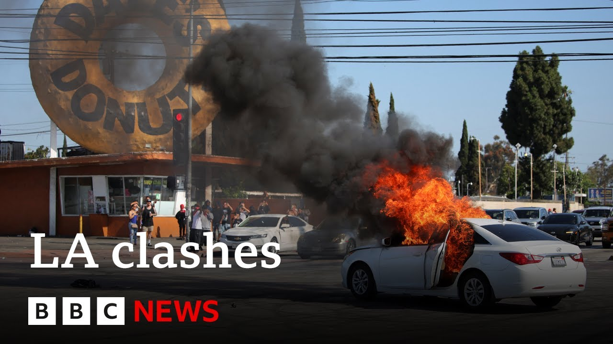

【特朗普总统下令国民警卫队进驻洛杉矶】
Summary: President Trump deploys 2,000 National Guards to Los Angeles amid escalating protests in a Hispanic district following clashes over immigration raids, with ICE using tear gas and flashbangs. Over 40 migrants were arrested, while local leaders criticize the operation as sowing terror.
摘要： 特朗普总统向洛杉矶派遣2000名国民警卫队，应对移民突袭引发的冲突升级。联邦移民官员使用催泪瓦斯和闪光弹驱散抗议者，逮捕40多名移民。当地官员谴责此举制造恐慌。

⏱️ Estimated Reading Time: 19 min
📚 六级生词 📚 雅思生词 📚 托福生词 📚 GRE生词 📚 视频里的生词
Hello, I'm Nikki Shell.
大家好，我是尼基·谢尔。
Welcome to the program.
欢迎收看本期节目。
We start this hour in Los Angeles.
我们首先关注洛杉矶的局势。
President Trump has ordered 2,000 National Guards into the city to counter escalating protests in a predominantly Hispanic district of the Californian city.
特朗普总统已下令2000名国民警卫队员进驻该市，以应对这座加州城市以拉丁裔为主的社区不断升级的抗议活动。
It comes after a second day of clashes between residents of Paramount and border immigration officers trying to implement President Trump's policy to deport unauthorized migrants.
此前，派拉蒙区居民与执行特朗普总统驱逐无证移民政策的边境移民官员已连续第二天发生冲突。
Now, federal ICE agents use tear gas, flashbangs, and bat-ons to disperse the protesters.
目前，联邦移民海关执法局特工正使用催泪瓦斯、闪光弹和警棍驱散抗议者。
The White House border policy chief has gone to Los Angeles to personally supervise the operation during which more than 40 migrants were arrested on Saturday.
白宫边境政策负责人已亲赴洛杉矶督战，周六行动期间有40多名移民被捕。
He warned that there would be zero tolerance of any violence or damage to private property.
他警告称对任何暴力或破坏私有财产的行为将采取零容忍态度。
The mayor of Los Angeles, Karen Bass, said ICE was sewing terror in America's second largest city.
洛杉矶市长凯伦·巴斯称移民局正在美国第二大城市制造恐怖。
While announcing the order deploying the National Guard, the White House said the administration has a zero tolerance policy for criminal behavior and violence, especially when that violence is aimed at law enforcement officers trying to do their jobs.
白宫在宣布派遣国民警卫队时表示，政府对犯罪行为和暴力零容忍，特别是针对执法人员的暴力行为。
These criminals will be arrested and swiftly brought to justice.
这些罪犯将被逮捕并迅速绳之以法。
The commander-in-chief will ensure the laws of the United States are executed fully and completely.
总司令将确保美国法律得到全面彻底的执行。
Well, I want to show you some of the latest pictures from Los Angeles, and they come in the last hour.
现在我想向大家展示洛杉矶的最新画面，这些是一小时前拍摄的。
They show law enforcement officers wearing protective equipment, including helmets, coming out of the federal detention center.
画面显示执法人员戴着包括头盔在内的防护装备从联邦拘留中心出来。
Now, several of them fire tear gas towards the protesters.
其中有几人向抗议者发射催泪瓦斯。
And it also appears that some form of explosive stun projectiles, which are often described as flashbangs, are thrown.
似乎还投掷了某种爆炸眩晕弹，通常被称为闪光弹。
Now, this came after the LAPD issued dispersal orders in some parts of the city.
此前洛杉矶警方已在部分城区发布驱散令。
They had said that the use of less lethal munitions had been authorized, saying they can cause pain and discomfort.
警方称已授权使用低致命性弹药，表示这些武器会造成疼痛和不适。
Well, the protesters then did seem to pull back and then law enforcement officers formed a line and they walked down the center of the road.
随后抗议者似乎开始后退，执法人员排成队列沿道路中央推进。
You can still see those bangs going off, clearing the area.
仍可听到爆炸声响起，清场行动持续进行。
They were trying to establish a cordon.
他们试图建立警戒线。
More tear gas and flash gang uh bang projectiles were thrown.
更多催泪瓦斯和闪光弹被投掷。
Now, officers say multiple people have been detained for failing to disperse after multiple warnings.
警方表示多人因经多次警告仍不散去而被拘留。
Well, in the last half an hour, President Trump has posted on his truth social platform.
就在半小时前，特朗普总统在其社交平台发文。
Let me read to you what he said.
我来为大家朗读内容。
He said, "Great job by the National Guard in Los Angeles after two days of violence, clashes, and unrest.
他写道："国民警卫队在洛杉矶表现优异，那里经历了两天的暴力、冲突和骚乱。"
We have an incompetent governor and mayor who were, as usual, just look at how they handled the fires, and now they're very slow permitting disaster.
我们有无能的州长和市长，看看他们处理火灾的方式，现在又在迟缓地放任灾难发生。"
Federal permitting is complete, unable to handle the task."
联邦许可程序完备，但他们无力应对。"
He goes on to say, "These radical left protests by instigators and often paid troublemakers will not be tolerated."
他继续写道："这些由煽动者和受雇闹事者发起的激进左翼抗议活动不会被容忍。"
He also says also from now on masks will not be allowed to be worn at protests.
他还宣布即日起抗议活动禁止佩戴口罩。
What do these people have to hide and why?
这些人有什么要隐藏的？为什么？
He says again thank you to the National Guard for a job well done.
他再次感谢国民警卫队的出色工作。
We at the moment can't yet verify whether the National Guard have actually deployed to LA.
我们目前尚无法核实国民警卫队是否已部署至洛杉矶。
But earlier one of the protesters described why they had come out onto the streets.
但早些时候一名抗议者解释了上街原因。
purpose was to peacefully tell them to not take our people.
目的是和平表达不要带走我们的同胞。
We overheard, it's been shared that the that ICE had came to our towns.
我们听闻移民局已来到我们社区。
We're just here living, working.
我们只是在这里生活工作。
They stopped at Home Depot where where they know that people are undocumented.
他们在家得宝拦截，明知那里有无证人员。
So, us as a community have came here to try to make peace so that they don't make families separate one another.
所以我们社区前来寻求和平，避免家庭分离。
And what did they do?
但他们做了什么？
They just started to attack us.
直接攻击我们。
We were peaceful.
我们本是和平的。
And all of a sudden they started throwing bombs at us and all a lot of us just unified together on the other side to not let the bus that was coming in with all the police and then instead of them peacefully telling us to back up, they just started pepper spraying us.
突然向我们投掷炸弹，我们团结阻挡载满警察的巴士，但他们没有和平劝离，直接使用胡椒喷雾。
There's a lot of women out there that have pepper spray.
现场有许多女性被喷胡椒喷雾。
Well, let's put the area where this is happening into a little context for you.
让我们了解一下事发地区的背景。
Now, Los Angeles, of course, is a huge sprawling city with many different districts with some of them predominantly populated by particular communities.
洛杉矶是座广袤的都市，拥有多个以特定族群为主的社区。
Now, the Paramount District is about 15 miles inland from the Pacific Ocean and its beaches and even further from areas like downtown LA, Santa Monica, and Beverly Hills.
派拉蒙区距太平洋海岸约15英里，距市中心、圣莫尼卡和比弗利山庄更远。
It is a predominantly Latino district, and despite the name, Hollywood's Paramount Studios are located more than 20 miles away.
这是以拉丁裔为主的社区，与派拉蒙影城相距20多英里。
Well, our reporter in Los Angeles is Reagan Morris.
本台驻洛杉矶记者里根·莫里斯发回报道。
The area I am, there's a very large law enforcement presence.
我所在区域有大量执法人员。
A lot of the protesters have either dispersed or moved on to to other areas, but we can still hear flashbangs going off in the distance.
多数抗议者已散去或转移，但仍能听到远处闪光弹爆炸。
And there were just some fireworks going off, one of the neighbors setting them off.
还有居民燃放烟花。
But it's still quite tense.
但气氛仍然紧张。
And just uh about an hour ago, we were walking from one area to another and somebody threw a Molotov cocktail over the uh fence where we were and the the LA County Sheriff's came rushing out.
约一小时前我们转场时，有人向我们所在围栏投掷燃烧瓶，县警迅速出动。
The guy's leg actually their pants caught on fire briefly as he tried to stamp it out and they were trying to find out who was throwing Molotov cocktails at them.
一名警员裤腿短暂着火，他们正追查投掷者。
Um a flashbang accidentally went off next to the police which made a lot of the protesters laugh, but then they just came in aggressively and moved people out.
一枚闪光弹在警察身旁误爆引发抗议者哄笑，但随后警方强势清场。
Uh but we can hear it's still going on and it moves around and we're near an area where earlier today, a few hours ago, there was a a very large uh presence of ICE agents, immigration and customs enforcement in unmarked cars.
冲突仍在持续，我们附近几小时前有大量移民局便衣特工活动。
And we've been told by some locals that there are factories around here where some migrants are still locked inside uh afraid to come out.
当地人称周边工厂里仍有移民因恐惧不敢外出。
And that's something we've heard not just over the last few days in LA County, but over the last few months that a lot of uh immigrants who do not have legal documents to live here are living in fear, ve very real fear of being deported.
这不仅在洛杉矶县最近几天，过去数月也一直有无证移民生活在被驱逐的恐惧中。
Now, LA is what's known as a sanctuary city.
洛杉矶是所谓的"庇护城市"。
Just explain what that means.
这意味着什么？
Well, it's not just LA.
不仅是洛杉矶。
Most of California is a sanctuary and it means that local law enforcement are not meant to cooperate with federal immigration officials.
加州大部分地区都是庇护区，意味着地方执法部门不应配合联邦移民官员。
So if an undocumented immigrant, illegal immigrant was arrested for shoplifting when when they get out of jail, the local authorities are not meant to tell immigration and customs enforcement that hey this guy you can pick him up and deport him.
因此若有无证移民因盗窃被捕，出狱后地方当局不应通知移民局实施驱逐。
Whereas that would happen in most places in Texas.
而这在得州多数地区都会发生。
So, a lot of lines are being crossed the last few days, though, at least the perception of it as people see local law enforcement fanned out on the streets after they were called in to help uh immigration and customs federal officials uh to protect them.
但最近几天界限已被打破，至少民众看到地方警察协助保护联邦移民官员。
But, uh locally, a lot of people just think they blended into one and see it as cooperation and targeting the immigrant community.
当地许多人认为这是针对移民社区的联合行动。
How do you think President Trump ordering in the National Guard is likely to go down?
您认为特朗普派遣国民警卫队会引发什么反应？
We've already heard from Governor Nome saying that it is inflammatory and will only escalate tensions.
纽森州长已表示这将煽动情绪、加剧紧张。
I I think that that is what the governor has said and that's what a lot of the local leaders are saying and people we've spoken to here today that uh that would not be wellreceived in a lot of neighborhoods especially immigrant.
这正是州长和地方领袖的观点，我们今天采访的民众也表示这尤其在移民社区不得人心。
This where I am in Paramount is more than 80% Hispanic.
我所在的派拉蒙区80%以上是拉丁裔。
Uh it's a very big immigrant community.
这是庞大的移民社区。
So, it will probably not be very wellreceived.
因此可能反响不佳。
We we've heard from our partners at CBS that just in the last hour or so that Governor Nuome and President Trump spoke on the phone for about 40 minutes.
据CBS消息，约一小时前纽森州长与特朗普总统通话40分钟。
We don't know the contents of that phone call, but maybe something has changed uh throughout that.
尚不清楚通话内容，但可能带来转机。
We don't know.
我们不得而知。
And this of course is all because of President Trump's policy to deport unauthorized migrants.
这一切都源于特朗普驱逐无证移民的政策。
Yes, that is part of the policy.
确实如此。
Whereas California policy is more often to protect migrants whether they have legal documents or not.
而加州政策更倾向保护移民无论其身份合法与否。
Uh you know California is the fourth biggest economy in the world and a lot of the agriculture sectors in particular there's a lot of migrants working in those jobs that don't necessarily have legal status in the United States and California and the economy really relies on them.
加州作为全球第四大经济体，农业等领域大量依赖无合法身份的移民劳工。
So they do try and protect uh law-abiding migrants without proper paper, many of whom pay taxes and go to work every day.
因此加州努力保护遵纪守法的无证移民，他们中许多人每日工作纳税。
Reagan Morris in Los Angeles.
里根·莫里斯在洛杉矶报道。
Well, one in witness to the uh protest that has been going on there over the last few hours spoke to a local reporter at the scene about what they had seen.
一位过去几小时抗议活动的目击者向现场记者讲述所见。
We were at a stoplight on the other side of Panama right over there in Alundra when out of nowhere in the stop immigration agents ICE all that came you know they came dressed up and all their military gear and they stopped traffic when they stopped traffic we started noticing and I told my girl that's that's immigration right there what they started doing what was they went in front of a a business a negotio and they started raiding they started bringing people out in vans once they started of doing that.
我们在阿尔图纳的巴拿马街路口等红灯时，移民局特工突然全副武装出现拦截交通，随后突袭一家商店开始用厢型车带人。
That's when everybody knew, you know, what was going on.
这时大家才明白发生了什么。
And everybody was there in the traffic jam.
所有人都被困在车流中。
Everybody, right?
每个人都是。
You're stuck in your car, in your vehicle.
被困在车里。
When they saw us looking at them doing all that, that's when they started throwing tear gas.
当他们发现我们在观察，就开始投掷催泪瓦斯。
We were Everybody was still in their vehicles.
当时所有人都还在车上。
As soon as a as one of the tear um tear gas, you said there was Who was behind you?
当催泪弹——你说后面是谁？
Behind us, there was a a woman and her and her young daughter.
我们后面是位女士和她约13岁的女儿。
She was around 13.
她现在正在医院。
I kept in touch with them and as we speak, she's in the hospital because the tear gas bomb hit her right in the face.
催泪弹正中她面部。
They were right behind us taking taking notice that we're not there at the protest.
他们注意到我们并非抗议者。
We were stuck at the light, right?
我们只是被红灯困住。
But we're witnessing everything happening right in front of our eyes.
但目睹了一切发生。
The tear gas explodes.
催泪弹爆炸。
They come out crying out of their vehicle and they can't breathe.
她们哭着下车无法呼吸。
They're literally on the ground, right?
直接瘫倒在地。
I have the video.
我拍下了视频。
I have the footage.
有现场画面。
Right.
没错。
And so what do you and your girlfriend do at that point?
当时你们怎么做？
We get off and we see everybody else getting off to record peacefully.
我们下车和其他人一样和平记录。
We do not throw anything at them.
没有投掷物品。
We're not yelling at them.
没有喊叫。
We're just recording what's going on because people deserve to know the truth.
只是记录真相。
This is why you guys are here.
这正是你们在此的原因。
This is because you know these things need to be documented.
这些需要被记录。
This is what they wanted.
他们想要什么？
They wanted people to riot.
想要引发骚乱。
They wanted the people to start fireworks.
想要人们燃放烟花。
They wanted people to start burning out.
想要纵火。
Why?
为什么？
Because this is the effect.
因为这就是效果。
So they can make us look bad.
这样就能抹黑我们。
So they can make us seem that we're the ones causing this.
让我们看起来是始作俑者。
That we started it.
是我们挑起的。
As Fernando Delgado witnessed to the protest, well, Rachel Uranga is the immigration reporter at the LA Times.
费尔南多·德尔加多见证抗议的同时，《洛杉矶时报》移民记者蕾切尔·乌兰加带来最新情况。
She told us about the latest situation in Los Angeles.
她讲述了洛杉矶最新局势。
Less than an hour ago, I can still hear some of the shots that were running ringing out in downtown Los Angeles.
不到一小时前，我仍能听到洛杉矶市中心传来的枪声。
There is some clashes going on in Paramount, which is the largely uh Hispanic community, working-class Latino community in uh Los Angeles.
派拉蒙区仍有冲突，这是洛杉矶主要的拉丁裔工薪阶层社区。
And there's also another small um small confrontation in downtown Los Angeles, just outside of the federal detention center, where immigrants are who have been uh picked up in raids this week or at courouses are being held.
市中心联邦拘留中心外也有小规模对峙，
Los Angeles is a notoriously blue area.
洛杉矶是一个众所周知的“深蓝”地区（民主党支持者占多数）。
Um, and it has a really heavy immigrant population.
而且这里有非常庞大的移民人口。
While there's people here that do think that um if you've if you've overstayed your visa or if you aren't here legally, you should uh face the law.
尽管这里有人认为，如果你签证逾期或是非法居留，就应该受到法律制裁。
Um, a lot there's a lot of people out here who support the immigrant community and who are tied to it.
但也有很多人支持移民群体，并与他们关系密切。
And just to tell you how deeply embedded California is with this community, it's like one out of every two children are immigrants.
加州与这个群体的联系有多紧密呢？比如说，每两个孩子中就有一个是移民。
It's a really high number that live and um in mixed families part, you know, one one of the family members has a status that that they're not here legally.
很多孩子生活在“混合家庭”中，也就是说，家庭成员中有人的身份是非法的。
Los Angeles has turned into ground zero as a test for the limits of Trump's immigration policy.
洛杉矶已经成为特朗普移民政策的“零号试验场”。
I mean here this economy really depends on immigrant labor and on communities that are tied to immigrants.
毕竟，这里的经济高度依赖移民劳动力以及与移民相关的社区。
So you know there the Trump administration has really had some high-profile rates here and it's really tested people.
所以特朗普政府在这里确实进行了几次高调的突袭行动，也确实对人们造成了影响。
Some people would say and and some politicians have said it's provoked people
一些人，包括一些政客表示，这种做法激怒了民众。
and I think they are really a lot of the politicians are not happy the local politicians knew some certainly um about them sending over the National Guard that they feel is sort of an overblown show of force.
很多政客对此并不满意，尤其是地方政客，例如加州州长纽森，他们认为派遣国民警卫队是夸张的武力展示。